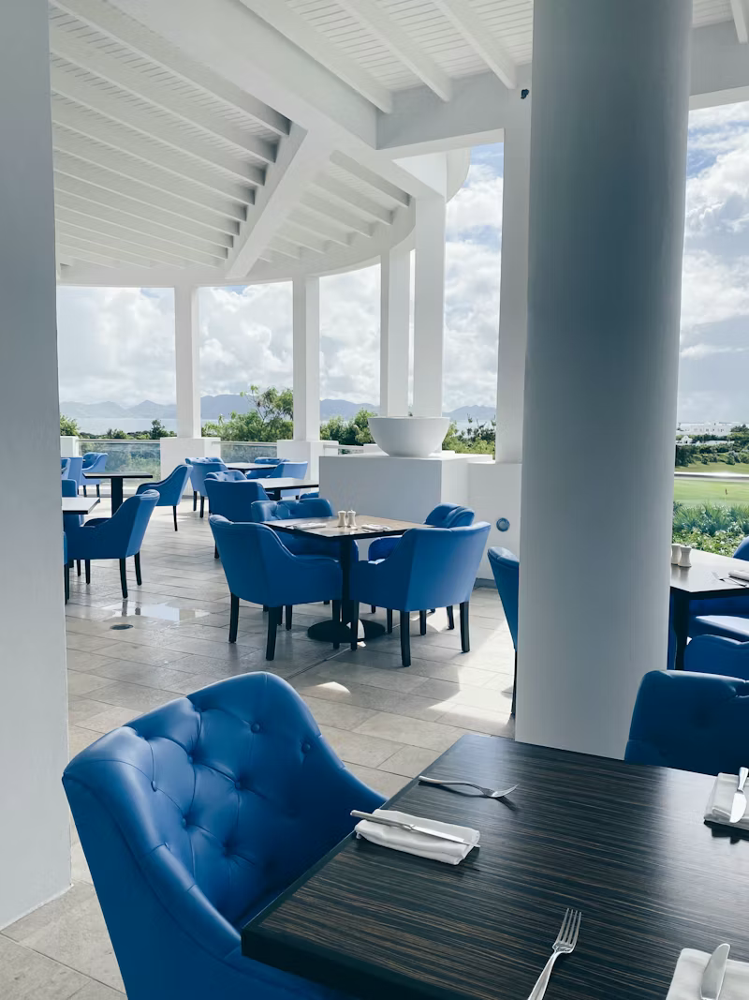

About Tahini
Taniti is a small, tropical island in the Pacific. While the island has an area of less than 500 square miles, the terrain is varied and includes both sandy and rocky beaches, a small but safe harbor, lush tropical rainforests, and a mountainous interior that includes a small, active volcano. Taniti has an indigenous population of about 20,000. Until a recent increase in tourism, most the Tanitian economy was dominated by fishing or agriculture.

Lodging
Taniti has a wide variety of lodging that ranges from an inexpensive hostel to one large, four-star resort. There are many small, family-owned hotels and a growing number of bed and breakfasts. All types of lodging are strictly regulated and regularly inspected by the Tanitian government.
Dining
Taniti currently has 10 restaurants: five serve mostly local fish and rice, three
serve American-style meals, and two serve Pan-Asian cuisine.
Taniti also has two supermarkets, two smaller grocery stores, and one
convenience store that is open 24 hours a day.

Transportation
Almost all visitors arrive to Taniti by air, though some arrive on a small
cruise ship that docks in Yellow Leaf Bay for one night per week. Taniti is served by a small
airport that can accommodate small jets and propeller planes. Taniti is in the process of
expanding the airport so larger jets will be able to land on the island within the next few
years.
Ground Transportation:
Public buses serve Taniti City and run from 5 a.m. to 11 p.m. every
day. Private buses serve the rest of the island. Taxis are available in Taniti City, and rental
cars can be rented from a local rental agency near the airport. Bikes and helmets are
available to rent from several vendors (helmets are required by law). Taniti City is fairly flat
and very walkable. Many tourists stay in the area surrounding Merriton Landing: this area is
easy to explore on foot.
FAQs
Answers to your island questions
What is the power outlet voltage on the island?
Power outlets are 120 volts (the same as in the United States).
What are the alcohol regulations?
Alcohol is not allowed to be served or sold between the hours of midnight and 9:00 a.m.
The drinking age on Taniti is 18 and the drinking age is strictly enforced.
What languages are on Taniti?
Many younger Tanitians speak fluent English. Very little English is spoken in rural areas, especially by the older residents.
What healthcare is available?
There is one hospital and several clinics. The hospital has many multilingual employees.
What is the crime rate on Taniti?
Violent crime is very rare on Taniti, but as tourism increases, there are more reports of pickpocketing and other petty crimes.
Are the Taniti businesses open on holidays?
Taniti enjoys a large number of national holidays, and many tourist attractions and restaurants will be closed on holidays, so visitors should plan accordingly.
What currency does Taniti use?
Taniti uses the U.S. dollar as its currency, but many businesses will also accept euros and yen. Several banks facilitate currency exchange, and many businesses accept major credit cards.